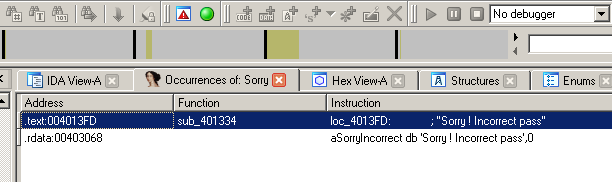
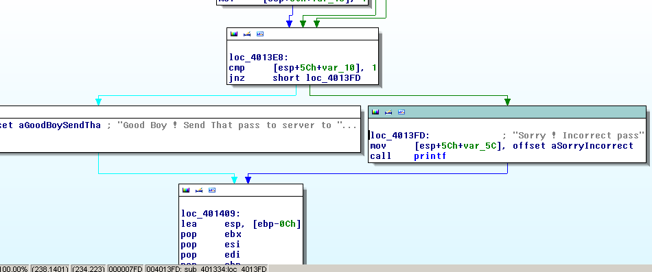
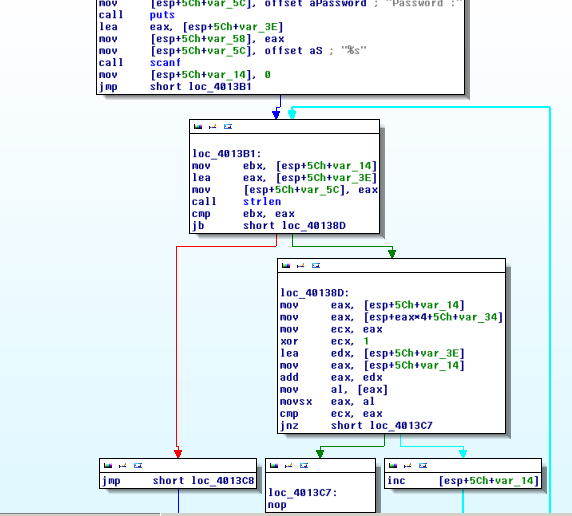
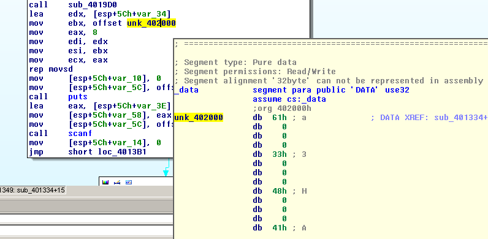
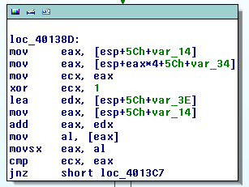

- Solved by: ttb,exco,makefu
- Writeup Author: makefu
Introduction
We got an url, and are being told to return the password of the crackme in 3 seconds to http://41.231.53.44:9393/check.php?p=Password.
Analyse what we've got
at first, look what we receive:
$ curl http://41.231.53.44:9393/ | strings
> ...
> !This program cannot be run in DOS mode.
> ...
Well, it seems like a windows binary, but :
$ file out.exe
out: data
$ curl http://41.231.53.44:9393/ | hexdump -C
> 00000000 4c 50 43 4b 01 00 00 00 34 39 62 37 63 37 34 61 |LPCK....49b7c74a|
> 00000010 66 66 34 62 34 38 65 63 37 33 65 62 37 30 38 34 |ff4b48ec73eb7084|
> 00000020 35 63 39 61 35 38 37 30 2e 65 78 65 00 00 00 00 |5c9a5870.exe....|
> 00000030 00 00 00 00 00 00 00 00 00 00 00 00 00 00 00 00 |................|
> *
> 00000100 00 00 00 00 00 00 00 00 00 00 00 00 9d 6c 00 00 |.............l..|
> 00000110 4d 5a 90 00 03 00 00 00 04 00 00 00 ff ff 00 00 |MZ..............|
So we have a packed file beginning with LPCK and the executable name. Down at 110 begins the Windows PE , Delimiter is "MZ".
We skip the header:
$ curl http://41.231.53.44:9393/ | dd skip=34 bs=8 > out.exe
$ file out.exe
> out.exe: PE32 executable (console) Intel 80386, for MS Windows
Reverse Engineering
Because we have no idea what it does we execute the shitz.
$ wine out.exe
> Password :
> balls
> Sorry ! Incorrect pass
Let's throw it in IDA Pro, even though none of us had ever used IDA we looked like drunken monkeys trying to operate a flux capacitor ...

Simply searching for the string 'Sorry' prompted for what we were looking for, the key compare function.

Scrolling up a bit there was the key compare algorithm.

The algo looks like this: 1. get user input 2. get stored password location 2. for each character, do something (no direct compare) with the stored password 3. if all character matched, goto success, else, goto fail
The password storage location is loaded at:

The comparsion of the builtin key against the given keys is this snippet:

var_14 is the index which character is currently being compared (it is incremented in the loop).
mov eax, [esp+5Ch+var_14]
mov eax, [esp+eax*4+5Ch+var_34] ; get the builtin char at the position
; i*4
mov ecx, eax
xor ecx, 1 ; xor the character with 1
So we tried out the algo in python:
>>> arr = open("out","rb").read()[4880:4912]
>>> arr
b'3\x00\x00\x00X\x00\x00\x00J\x00\x00\x00Y\x00\x00\x00m\x00\x00\x00A\x00\x00\x00d\x00\x00\x00A\x00\x00\x00'
>>> pwd=""
>>> for c in arr:
... if c != 0:
... pwd+=(chr(c^1))
...
>>> pwd
'2YKXl@e@'
Go for it!
$ wine out.exe
Password :
2YKXl@e@
Good Boy ! Send That pass to server to get the Flag
After testing the resulting password by hand we were ready to automate the process!
Automating
I tried to put the whole parsing in a long shell pipe which seemed to work but actually was too slow?! So i built a very small python script which held the http connection open an just pumped the result right back.
This is our embarrassingly small solution to retrieve the flag:
1 2 3 4 5 6 7 8 9 10 11 12 13 14 | #!/usr/bin/python
import requests
s = requests.session()
ret = s.get("http://41.231.53.44:9393/",stream=True)
# avoid loading the whole file
arr=ret.raw.read()[4880:4912]
pwd=""
for c in arr:
if c != 0:
pwd+=(chr(c^1))
i=s.get('http://41.231.53.44:9393/check.php?p=%s'%pwd)
print(i.content)
|
Lessons learned
Just use python in first place, shell is not the right tool to solve reverse engineering tasks. Also, get some more exercise with your tools of trade.